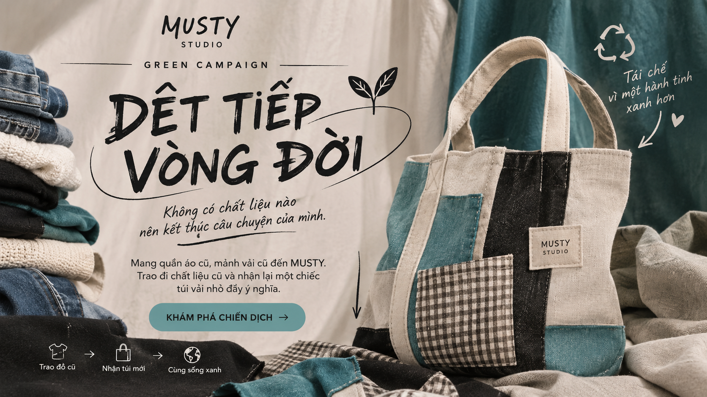

01
TÁI CHẾ SÁNG TẠO
Tận dụng những chất liệu đã qua sử dụng, biến chúng thành sản phẩm mới với diện mạo và giá trị riêng, góp phần hạn chế lãng phí tài nguyên.
MUSTY STUDIO mang đến những chiếc túi tái chế, sản phẩm thủ công và thiết kế độc bản. Chúng tôi tin rằng những chất liệu tưởng chừng đã cũ vẫn có thể bắt đầu một hành trình mới đầy sáng tạo.

“Không có chất liệu nào nên kết thúc câu chuyện của mình.”
Một chiếc áo cũ, một mảnh vải thừa hay những chất liệu
không còn được sử dụng đều có thể bắt đầu một hành trình mới.
MUSTY mong muốn trao cho chúng cơ hội được tái sinh,
thay vì bị lãng quên hoặc bỏ đi.
Hãy mang quần áo cũ hoặc những mảnh vải còn có thể tái sử dụng
đến tham gia chiến dịch. Như một lời cảm ơn,
MUSTY gửi tặng bạn một chiếc túi vải nhỏ mang tinh thần
tái chế và sáng tạo.
MUSTY tin rằng một món đồ đẹp không nhất thiết phải hoàn hảo hay được sản xuất hàng loạt. Vẻ đẹp đôi khi đến từ những chất liệu cũ, những đường may thủ công và những dấu ấn không thể lặp lại.
Chúng tôi lựa chọn tái sử dụng chất liệu, kết hợp sự sáng tạo và kỹ thuật thủ công để tạo nên những chiếc túi mang diện mạo mới. Với MUSTY, mỗi sản phẩm không chỉ là một món phụ kiện mà còn là câu chuyện về sự tái sinh và cá tính riêng.

Không chỉ là một chiếc túi, mà còn là một câu chuyện được tái sinh từ những chất liệu tưởng chừng đã cũ. Mỗi sản phẩm mang một dấu ấn riêng và một giá trị khác biệt.
Tận dụng những chất liệu đã qua sử dụng, biến chúng thành sản phẩm mới với diện mạo và giá trị riêng, góp phần hạn chế lãng phí tài nguyên.
Mỗi sản phẩm được chăm chút qua từng công đoạn. Từng đường kim, mũi chỉ thể hiện sự sáng tạo, tỉ mỉ và tâm huyết của người làm ra sản phẩm.
Không chạy theo sự đại trà, MUSTY hướng đến những thiết kế mang cá tính riêng, để mỗi chiếc túi trở thành một dấu ấn khác biệt của người sở hữu.
Khuyến khích lựa chọn và tiêu dùng có trách nhiệm. Mỗi chiếc túi tái chế là một cách nhỏ để cùng lan tỏa lối sống xanh và trân trọng tài nguyên.
Khám phá những sản phẩm mang dấu ấn riêng của MUSTY, được tạo nên từ cảm hứng sáng tạo, sự tỉ mỉ và tinh thần tái sử dụng.

350.000₫

390.000₫

450.000₫

520.000₫
Mỗi chất liệu đều có một câu chuyện. Cùng MUSTY khám phá những thiết kế, nguồn cảm hứng và góc nhìn về thời trang tái chế.
Tìm hiểu câu chuyện thương hiệu, giá trị theo đuổi và hành trình tạo nên những sản phẩm mang dấu ấn MUSTY.
TÌM HIỂU THÊM →Khám phá những nhóm thiết kế độc đáo, được sáng tạo từ chất liệu tái sử dụng với cá tính và phong cách riêng.
KHÁM PHÁ NGAY →Những câu chuyện về sản phẩm thủ công, tái chế, bảo vệ môi trường và phong cách sống xanh.
ĐỌC BÀI VIẾT →Đừng bỏ đi những điều cũ kỹ, bởi đôi khi chúng chỉ đang chờ một cơ hội để trở thành điều đặc biệt. Hãy cùng MUSTY trao cho vật liệu cũ một hành trình mới, để mỗi sản phẩm không chỉ đẹp mà còn mang ý nghĩa riêng.
CHỌN THIẾT KẾ CỦA BẠN →